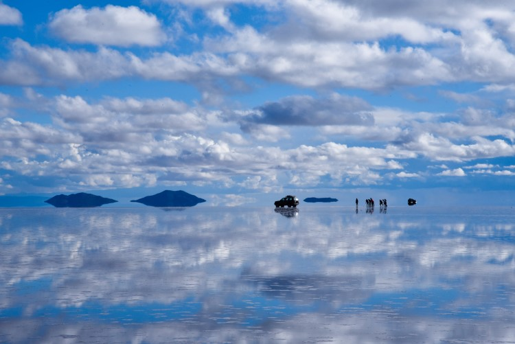

Salar de Uyuni
Salar de Uyuni is the world's largest salt flat, at 10,582 square kilometers (4,086 sq mi). It is in the Daniel Campos Province in Potosí in southwest Bolivia, near the crest of the Andes at an elevation of 3,656 meters (11,995 ft) above sea level.
Back